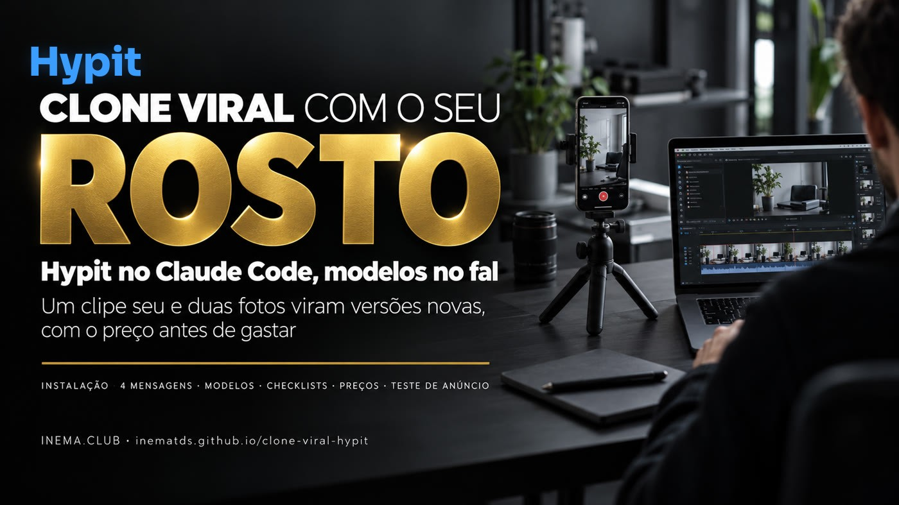

Um clipe seu e duas fotos viram o mesmo vídeo com você, em outra língua ou com outros personagens. O Claude mostra o plano e o preço antes de gastar.

Este é um kit gratuito do INEMA, em português, com mensagens prontas para colar no Claude Code, modelos de arquivo, checklists e uma tabela de preços. Ele ensina a usar o Hypit, uma ferramenta aberta de vídeo, para refazer um clipe curto com o seu próprio rosto, fazer a versão em outra língua ou trocar a pessoa por personagens fictícios. Serve para quem faz marketing ou cria conteúdo e quer testar várias versões de um anúncio sem gravar de novo. Você precisa do Claude Code, de uma conta no fal com alguns dólares de crédito, de um clipe seu e de duas fotos do seu rosto.
O Hypit planeja e monta o vídeo no seu computador. O fal roda os modelos de imagem e de vídeo. O Claude Code conversa com você e escreve os arquivos. Este kit junta o que você precisa dizer a ele.
Quatro mensagens prontas, em português, para colar no Claude Code. Nenhum comando para digitar.
Toda mensagem termina com "Me mostre o plano e o preço e não construa nada." O Claude orça e para.
Depois da primeira, um rosto novo ou uma língua nova é mais uma mensagem, não um dia de gravação.
Instalar, refazer com o seu rosto, conferir e fazer versões. Em cada um, o Claude mostra o plano e o preço antes.
Uma mensagem instala o Hypit só no projeto, liga o fal lendo a FAL_KEY do ambiente e aponta o Chrome que você já tem. Uns 6 minutos.
O Hypit pega o primeiro e o último quadro do clipe, coloca o seu rosto nos dois e gera os 8 segundos entre eles. Imagens primeiro, vídeo depois.
Rosto, mãos e texto na cena. Corrija com modelos premium. Depois: outra língua ou personagens fictícios no mesmo clipe.
Quatro coisas, mais o Chrome. O Claude confere o resto (como o Node.js 22.15+) e avisa se faltar.
Roda no seu plano do Claude. Deixe ele pedir permissão antes de rodar comandos; nada de modo automático para trabalho pago.
Alguns dólares bastam para começar. Crie a API key no painel do fal.ai e guarde no perfil do terminal:
# no fim do ~/.zshrc (Mac) ou ~/.bashrc (Linux) export FAL_KEY="cole-aqui-a-sua-chave" # confira sem mostrar o valor [ -n "$FAL_KEY" ] && echo "FAL_KEY carregada" # Windows (PowerShell): grava para o seu usuário setx FAL_KEY "cole-aqui-a-sua-chave"
Nunca cole a chave no chat. O Hypit lê do seu computador.
De 8 a 10 segundos (as mensagens usam os primeiros 8 s). Seu, ou com direito de refazer.
Uma de frente e uma levemente de lado. Sem óculos escuros, sem mão na boca, com luz boa.
Cole cada mensagem no Claude Code, na pasta do projeto. As versões completas, com explicação, estão em kit/.
Uma pasta vazia para o projeto, com o clipe e as fotos dentro de references/. Você não precisa tirar os quadros do clipe: o Claude extrai o primeiro e o último quadro quando você manda a mensagem do passo 3.
meu-clone/ ├── characters.json # só para o passo 7 (personagens) └── references/ ├── meu-clipe.mp4 # o clipe que você vai refazer ├── rosto-1.jpg # foto de frente ├── rosto-2.jpg # foto levemente de lado └── meu-ugc.mp4 # só para o passo 7
Abra o Claude Code nessa pasta e cole a mensagem de instalação. O que costuma acontecer: o Claude instala a skill só no projeto (npx skills add hypit-ai/hypit, sem -g) e o pacote @hypit/hypit, e às vezes corrige sozinho uma configuração que saiu errada. Você só aprova. Se depois o /hypit não for reconhecido, feche e abra o Claude Code na mesma pasta.
Instale o Hypit nesta pasta. Instale a skill do Hypit de github.com/hypit-ai/hypit só para este projeto, e o comando hypit pelo npm. Depois ligue o fal para as imagens e os clipes rodarem no fal: o Hypit não vem com o fal, então escreva um pequeno pacote Provider do projeto em packages/provider-fal que leia a minha FAL_KEY do ambiente e nunca grave a chave em arquivo. A FAL_KEY já está definida. Aponte o renderizador de páginas do Hypit para o Chrome que eu já tenho instalado. Me mostre o plano primeiro e depois confira se tudo funciona.
Primeiro e último quadro com o seu rosto, depois o vídeo entre eles. Em duas rodadas, para conferir as imagens antes de pagar o vídeo. Se o seu clipe tiver menos de 8 s, troque "8 segundos" pela duração real. Cerca de US$ 0,71 pela tabela de 21/10/2026.
/hypit Refaça os primeiros 8 segundos de references/meu-clipe.mp4 com o meu rosto, usando references/rosto-1.jpg e references/rosto-2.jpg. Pegue o primeiro e o último quadro do clipe e coloque o meu rosto nos dois, mantendo a mesma pose, a mesma sala e a mesma luz. Depois faça o clipe de 8 segundos entre esses dois quadros. Divida em duas rodadas, primeiro as imagens e depois o clipe, para eu conferir as imagens antes de pagar o vídeo. Me mostre o plano e o preço e não construa nada.
O rosto (olhos, nariz, sorriso), as mãos (conte os dedos nos movimentos rápidos) e qualquer texto na cena — uma placa "CEREAL" pode virar "CENLIL". Em versões com personagens, confira também cabelo e dentes.
Modelo de imagem mais forte, um quadro do meio e vídeo em 1080p. Mesmos prompts, só o modelo muda. Cerca de US$ 2.
/hypit O rosto e o texto da cena estão com cara de falso. Refaça com modelos premium: GPT Image 2.5 na qualidade máxima para três quadros (início, meio e fim), para o movimento não sair do trilho, e MiniMax H3 Max em 1080p para dois clipes de uns 4 segundos cada. Mantenha todos os prompts iguais, mudando só o modelo. Me mostre o plano e o preço e não construa nada.
Traduz e corta a fala, voz nova, conferência com o Whisper, lábios sincronizados e legenda. Se a voz errar um número ou palavra rara, escreva do jeito que se fala e confira de novo. Use a sua voz ou uma voz genérica: clonar a voz de outra pessoa exige a permissão dela. Cerca de US$ 2.
/hypit Faça uma versão em japonês do meu clipe premium. Traduza a fala e corte para caber em 8 segundos, faça uma voz nova, rode uma conferência de fala, sincronize os lábios com a voz nova e coloque legendas. Me mostre o plano e o preço e não construa nada.
Com o characters.json do kit (7 personagens inventados) na raiz da pasta e o clipe em references/meu-ugc.mp4. 7 versões custam cerca de US$ 25,20. Se o filtro de segurança bloquear uma foto (content_policy_violation), suavize a descrição daquele personagem e rode só ela de novo.
/hypit Quero os primeiros 8 segundos de references/meu-ugc.mp4, um clipe de UGC, refeitos com personagens diferentes, uma versão por personagem do characters.json. Cada personagem ganha uma foto de identidade feita pelo GPT Image 2.5, e depois o MiniMax H3 Recast coloca essa pessoa no clipe em 1080p, mantendo os movimentos, a câmera e o tempo. Me mostre o plano e o preço total de todas as versões e não construa nada.
Rode todas como um teste só, com a mesma verba pequena para cada uma. Depois de alguns dias, fique com as duas que o público assiste por mais tempo e faça versões novas da vencedora: rosto, cenário ou língua.
Fique abaixo de 10 segundos. O Recast aceita de 5 a 30 s, mas curto acerta mais e custa menos.
Sem óculos escuros, sem mão na boca. Uma de frente, uma de lado, luz boa.
Confira as imagens (centavos) antes de pagar o clipe (dólares).
Custos calculados pelos preços de tabela lidos em 21/10/2026. Preço muda: abra as páginas antes de gastar. O Hypit é grátis; você paga os modelos no fal.
| O quê | Custo aproximado | Fonte |
|---|---|---|
| Primeira versão (Seedream 5 Lite + MiniMax H3 768p) | US$ 0,71 | tabela do fal |
| Versão premium (3 imagens GPT Image 2.5 + 2 clipes H3 Max 1080p) | ~US$ 2 | tabela do fal |
| Nova língua (voz, Whisper, lábios, legenda; o Claude escolhe os modelos e mostra no plano) | ~US$ 2 | tabela do fal |
| MiniMax H3 Recast 1080p | US$ 0,45/s → US$ 3,60 por clipe de 8 s; 7 versões (o characters.json) ≈ US$ 25,20; lote de 8 ≈ US$ 28,80 | fal · Recast |
| GPT Image 2.5 (edição) | ~US$ 0,006 a 0,055 por imagem + ~US$ 0,01 por referência | fal · GPT Image 2.5 |
| Higgsfield Genjutsu 1080p (comparação) | US$ 1,632/s → US$ 13,06 por clipe; lote de 8 ≈ US$ 104,50 | Higgsfield |
Recast e Genjutsu são modelos diferentes; a qualidade não foi comparada aqui, só o preço de tabela. As linhas "premium" e "nova língua" são somas aproximadas dos modelos citados: o valor exato é o que o Claude mostra no plano.
Skill é um pacote de instruções que o Claude Code carrega. /hypit no início da mensagem faz ele usar a skill do Hypit.
Provider é o pacote que liga o Hypit a um serviço (aqui, o fal). O hypit.runtime.json diz qual modelo roda em qual serviço.
A linguagem de composição do Hypit: um arquivo com as entradas, os prompts e os trabalhos de modelo. O Claude escreve por você.
Modelos de IA no fal: os dois primeiros fazem imagem; o MiniMax H3 faz vídeo. Recast é a versão do H3 que troca a pessoa de um vídeo.
Whisper escuta um áudio e escreve o que ouviu (para conferir a voz nova). Lip sync é sincronizar a boca com a voz.
UGC é vídeo com cara de gravado no celular por um cliente. 768p e 1080p são a altura do vídeo em pixels: maior, mais nítido e mais caro.
content_policy_violation é a resposta do filtro de segurança do modelo quando ele recusa uma descrição. Node.js é o programa que roda o Hypit; o Claude confere se você tem.
Leia a licença completa no repositório do Hypit. Por isso o Hypit não vem dentro deste kit.
Licença MIT: só o texto, os modelos de arquivo e os scripts do INEMA. O que você cria com o Hypit é seu; os termos dos provedores de modelo continuam valendo.
Tudo em texto, em português. Abra pelo GitHub ou baixe o repositório.
kit/ ├── 00-COMECE-AQUI.md ├── 01-instalacao/ o que precisa · mensagem de instalação · FAL_KEY segura ├── 02-mensagens/ as 4 mensagens para o Claude ├── 03-modelos/ characters.json · runtime de exemplo · 2 arquivos .svml ├── 04-checklists/ confira antes de corrigir · 3 erros · teste com 7 versões └── 05-precos-e-links.md
Vídeo explicativo do kit: página do vídeo.